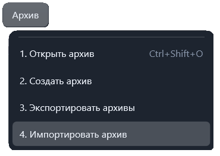

Функция «Импортировать архив»
Команда «Архив → Импортировать архив» копирует готовый файл
.apkw в хранилище приложения. Исходный файл остаётся на месте.
Заранее открывать вкладку архивов не требуется: команда открывает её при необходимости. Импорт также доступен из контекстного меню корневого узла «Архивы».

Порядок импорта
- Выберите «Импортировать архив».
- Укажите один файл
.apkwи подтвердите выбор. - Дождитесь уведомления об успешном добавлении. Архив появится в дереве.
При совпадении имени с уже имеющимся архивом импорт не выполняется и существующий файл не заменяется. Если выбрана копия, уже находящаяся в хранилище, приложение также сообщает об этом.
В импортируемой копии проверяется наличие сведений о файлах архива; при их отсутствии они создаются автоматически. При ошибке импорта приложение показывает сообщение.
Доступность
Импорт готового архива не требует прав на редактирование его содержимого и доступен в том числе регулировщику. Команда верхнего меню блокируется во время работы с аппаратурой.
Архивы старого формата .apk сначала преобразуйте через
«Файл → Конвертация».